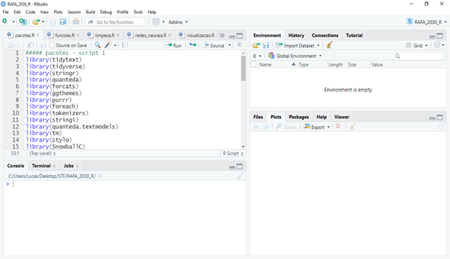
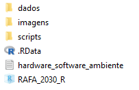
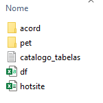
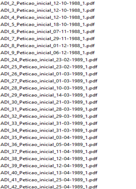
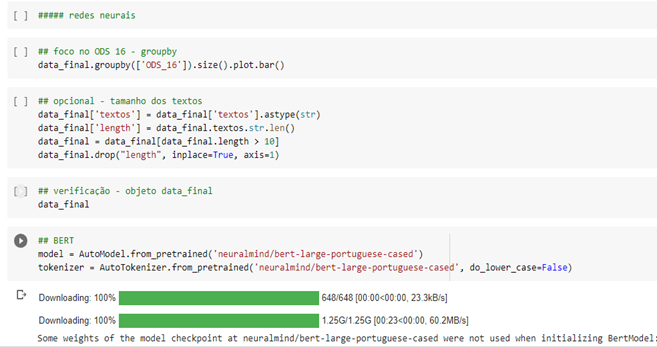

# Carregar pacotes
library(keras)
library(tensorflow)
# Exemplo - Dataset MNIST
mnist <- dataset_mnist()
x_train <- mnist$train$x
y_train <- mnist$train$y
x_test <- mnist$test$x
y_test <- mnist$test$y2 Ambiente de desenvolvimento
A iniciativa RAFA foi desenvolvida em linguagem R e Python, prioritariamente. Isso significa que, com exceção de alguns poucos passos intermediários, tudo aquilo que será apresentado nesta documentação envolve apoio computacional de alguma linguagem de programação (R ou Python, neste caso). Neste capítulo, serão apresentadas informações sobre a montagem do ambiente, características das máquinas utilizadas no desenvolvimento e versões de softwares e bibliotecas utilizadas, bem como o registro de algumas referências importantes sobre a etapa de conectar as linguagens R e Python.
O time da iniciativa tem integrantes da área jurídica e do escritório de estatística do tribunal, estes últimos responsáveis pelo desenvolvimento técnico da ferramenta. Os membros da área jurídica são responsáveis pela curadoria dos resultados e pela gestão do projeto Agenda 2030 como um todo. O corpo técnico escolheu usar R e Python pois são as linguagens mais populares para ciência de dados, mas os registros desta documentação podem ser reproduzidos em outras linguagens de programação com algum esforço de código e pesquisa de pacotes/bibliotecas. Outras opções populares são: Scala, para utilização do Ecossistema Hadoop, Julia, Go e C++.
Dado que Python e R são linguagens populares em ciência de dados, não é difícil encontrar informações e cursos sobre processamento de linguagem natural (NLP) na internet. Reproduzir códigos diretamente de fontes não oficiais, no entanto, pode ser complicado e até limitar o potencial de desenvolvimento. Neste contexto, um possível caminho envolve pesquisar algoritmos e estratégias para resolver a tarefa de interesse em boas plataformas (Towards Data Science e Towards AI do Medium, Kaggle e MachineHack) e partir para análise da documentação oficial dos frameworks/pacotes utilizados, como Tensorflow, Keras e Pytorch em Python ou Quanteda e Text em R. Evidentemente, tais pesquisas não excluem a necessidade de formação. Apesar de todos os membros do escritório de estatística envolvidos na iniciativa possuírem graduação/pós graduação em estatística, houve necessidade de complementar a formação superior com cursos especializados em aprendizagem de máquina, deep learning e inteligência artificial. A estrutura da formação complementar pode ser bootcamp, pós graduação ou até mesmo cursos livres, mas é importante que o conteúdo cubra todo o fluxo de ciência de dados, a saber: entrada de dados – manipulação – visualização – modelos – deploy – apresentação. Nas referências desta documentação existem sugestões de plataformas e cursos.
A infraestrutura necessária para desenvolvimento de aplicações com deep learning pode ser um entrave, dado que as máquinas precisam de componentes robustos e, em alguns casos, de placas de vídeo dedicadas. Por este motivo, a presente documentação apresentará as soluções em R e Python, sendo que para a última linguagem é possível utilizar o Google Colab1, que é um serviço de nuvem gratuito hospedado pelo próprio Google centrado em facilitar desenvolvimento de aprendizagem de máquina e inteligência artificial. Trata-se de uma ferramenta que permite misturar código e texto em uma técnica conhecida como notebook. Na prática, o Google Colab permite rodar códigos em Python necessitando apenas de uma conta Google e isso reduz significativamente os problemas com ambiente, dado que o próprio Colab tem vários pacotes/bibliotecas em Python instalados nativamente. A instalação local do Python será feita através da distribuição Anaconda e servirá apenas para conectar Python e R, com objetivo de rodar Tensorflow e Keras através da IDE RStudio tal qual indica a referência Hvitfeldt e Silge (2021)2. A instalação local da linguagem R é simples, com exceção do passo de conexão entre R e Python, que envolve um pouco mais de atenção e será melhor explicado adiante no capítulo.
Inicialmente, uma máquina pessoal de um membro da iniciativa foi utilizada para desenvolvimento. Trata-se de um notebook com 32gb de RAM, 2T de SSD e processador Intel i9, com placa de vídeo Geforce GTX 1660 Ti. Em um segundo momento, tal notebook foi substituído por uma máquina virtual com os mesmos 32gb de RAM e processador Xeon. Trata-se de uma máquina instanciada apenas para desenvolvimento da ferramenta, com poucos programas instalados e completamente dedicada para processamento dos textos. A seguir serão apresentados aspectos técnicos da instalação local da linguagem R e as versões utilizadas para softwares e pacotes. A documentação seguirá, neste capítulo, com a instalação da distribuição Anaconda Python, conexão Python e R e a apresentação da organização geral do projeto em linguagem R e dos notebooks em Python.
2.1 Instalação local da Linguagem R
A instalação local da Linguagem R não envolve muitas dificuldades e pode ser feita através das orientações dadas na página oficial da linguagem. Recomenda-se fortemente o uso da IDE RStudio para desenvolvimento em R. Trata-se de um ambiente integrado de desenvolvimento onde é possível fazer a gestão dos pacotes necessários, upload de bases de dados sem necessidade de usar linha de código e avaliação das saídas de visualização. Também é possível conectar o RStudio ao GitHub, o que permite melhor versionamento dos códigos. A interface da IDE RStudio pode ser vista na Figura 2.1:

Dentro da IDE RStudio é possível montar projetos em R. Projetos são, em última análise, propostas de organização para códigos em R. Com projetos, pode-se organizar as bases e os scripts em pastas diferentes, bem como incluir documentações e manuais em PDF. Uma das maiores vantagens, para além da organização em si, é a montagem do ambiente. Usando projetos, o ambiente de desenvolvimento fica explicitamente definido como uma pasta do próprio projeto, o que facilita, por exemplo, o uso de caminhos para localizar arquivos específicos. A organização geral do projeto em R da iniciativa RAFA será melhor apresentada em seções subsequentes.
2.2 Instalação local da distribuição Anaconda Python e conexão com R
Para ajustar redes neurais em R, uma alternativa possível é conectar a Linguagem Python e assim utilizar os frameworks Keras e Tensorflow, específicos para deep learning. Isso certamente não é simples e existem outros pacotes em R capazes de executar a mesma tarefa, porém não com a mesma performance. O fluxo é simples: Instala-se a distribuição local Anaconda Python3 e em seguida, as bibliotecas Keras e Tensorflow. Na sequência, instalam-se alguns pacotes em linguagem R para fazer tal conexão, sendo que um ambiente dedicado dentro do Anaconda se faz necessário. A conexão entre R e Python pode ser feita com ajuda das orientações disponíveis neste link, mas há um script chamado python_r na pasta zip contendo um passo a passo. Para verificar se a conexão entre R e Python está funcionando corretamente, pode-se chamar uma base de dados interna ao Tensorflow (MNIST), como mostra o código a seguir:
A biblioteca Tensorflow é uma das ferramentas que compõem o estado da arte em deep learning, mas seu uso não é simples. O pacote Keras surgiu com o objetivo de facilitar o uso do Tensorflow e por isso essa associação (Keras + Tensorflow) é tão usada em projetos de aprendizagem de máquina e inteligência artificial. Com os pacotes em Linguagem R, há ainda outro benefício: as redes e todas as funções essenciais para avaliação de performance e tratamento inicial dos dados podem ser feitas, com Keras e Tensorflow, em sintaxe R e tidy, como mostra a uma rede em Keras no R:
# Primeira rede neural
dense_model <- keras_model_sequential() %>%
layer_embedding(input_dim = max_words + 1,
output_dim = 32,
input_length = max_length) %>%
layer_global_average_pooling_1d() %>%
layer_dense(units = 32, activation = "linear") %>%
layer_dense(units = 32, activation = "sigmoid")
dense_modelSintaxe tidy é o termo utilizado pela comunidade da Linguagem R para os códigos escritos com apoio dos pacotes tidyverse e dplyr, que facilitam enormemente a manipulação de dados. Com os pacotes deste universo (tidy), as operações características de data wrangling tais como select, slice, distinct, subset, mutate e rename são feitas de maneira intuitiva e simples, com uso de um operador chamado pipe (%\>%). Abaixo apresenta-se exemplos de operações realizadas com o pacote dplyr:
# Dividindo por sentenças - Exemplo: Primeiro texto
texto_sentencas <- tibble(text = dados$texto[1]) %>%
unnest_tokens(sentenca, text, token = "sentences") %>%
mutate(sentenca_id = row_number()) %>%
select(sentenca_id, sentenca)2.3 Organização geral do projeto em linguagem R e dos notebooks Python
O projeto em linguagem R foi estruturado pensando na utilização encadeada dos scripts e em boas práticas para organização e versionamento de código. Basicamente, a raiz do projeto contém as pastas principais, a saber: dados, imagens e scripts. Contém, também, um documento simples com informações básicas de hardware, versões dos softwares utilizados e montagem do ambiente. A pasta raiz do projeto pode ser vista na Figura 2.2:

A pasta scripts, como se pode imaginar, contém extratos de códigos da iniciativa, além de um catálogo. O objetivo de catalogar os scripts é sugerir uma ordem de utilização e explicar, em linhas gerais, a tarefa a ser realizada por cada um. Os scripts são, em ordem alfabética: limpeza, pacotes_funcoes, redes_neurais. Todos estão devidamente comentados. A pasta dados contém as bases brutas e manipuladas em linguagem R (xlsx e csv), além dos arquivos em PDF para a leitura, insumo da iniciativa. Tal como na pasta scripts, existe um catálogo de tabelas, para que o usuário identifique tabelas brutas e manipuladas, bem como o conteúdo de cada um dos registros. A organização da pasta pode ser vista na Figura 2.3:

Pode-se notar que existem ainda duas pastas dentro da pasta dados: Petições e Acórdãos. Tais pastas organizam os arquivos em PDF e os dividem entre petições iniciais e acórdãos, os dois tipos de documentos jurídicos que são utilizados na iniciativa RAFA. Por questões de infraestrutura e base de dados, os documentos possuem, originalmente, nomes com estrutura do tipo classe_numero_peticao_inicial_xxx.pdf ou classe_numero_acordao_xxx.pdf, como a Figura 2.4 mostra:

Neste caso, a própria linguagem R associada à regex (expressões regulares) pode separar as petições e os acórdãos, caso os documentos estejam todos em uma mesma pasta. O script fluxo serve ao propósito de apresentar um exemplo de movimentação de arquivos em pastas usando linguagem R, via regex. Trata-se de uma automatização útil, que pode render a economia de algumas horas caso a base de arquivos seja grande.
Por fim, o projeto R contém o arquivo do projeto em si (aquele que abre o projeto na IDE) e uma pasta de imagens, que pode ser utilizada pelo usuário para guardar imagens e outputs diversos. Além do projeto em R, que contém alguns dos módulos em teste da iniciativa RAFA, também serão disponibilizados scripts isolados para operações e tarefas específicas, tais como clusterização e similaridade entre textos, modelos outros de aprendizagem de máquina, pos-tag e análise sintática de sentenças. Tais scripts serão referenciados no corpo da presente documentação e serão organizados numa seção anexa ao texto. A intenção de disponibilizar exemplos de abordagens e ideias que não compõem oficialmente a iniciativa é clara e objetiva: o que não se mostrou bom para a RAFA pode resolver outro problema.
Os notebooks em Python foram reduzidos a um só, que realiza as mesmas tarefas dos scripts em R. Neste caso, recomenda-se a utilização do Google Colab Pro, que disponibiliza RAM alta e TPUs para deep learning. A única diferença entre os scripts em R e Python se dá pela utilização do Pytorch. Enquanto em R a opção foi usar Tensorflow e Keras, em Python existem códigos em Pytorch. Isso torna a iniciativa mais geral e mais ampla, além de permitir a utilização de modelos mais avançados como o BERT e outros tipos de transformers. Como nos scripts em R, os códigos do notebook em Python estão comentados, como se pode ver na Figura 2.5 a seguir:

Em resumo, serão entregues junto da documentação um projeto em R, um notebook em Python e um arquivo zip contendo scripts individuais para tarefas específicas, com códigos em R e Python. A documentação segue com as informações sobre entrada, leitura e limpeza dos dados, que é uma etapa importante da iniciativa. Neste contexto, são necessárias algumas explicações sobre as atividades de OCR (ocerização) e pos-tag.
Google Colab disponível em: https://colab.research.google.com.↩︎
HVITFELDT, E.; SILGE, J. Supervised machine learning for text analysis in R. Chapman and Hall/CRC, 2021. Disponível em: https://smltar.com/. Acesso em: 21 jul. 2022.↩︎
Distribuição local Anaconda Python. Disponível em: https://www.anaconda.com/products/distribution.↩︎